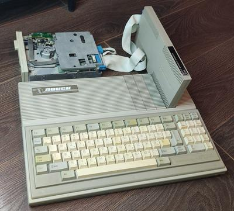

С новым годом!
С наступающим, друзья!
Время промежуточных итогов, из которых у меня главный - это 3 вышедших за прошедщий год видео, ведь это на 3 больше, чем за год до этого. Чуть было не вышло и четвертое, но разонравилось на монтаже. Но не волнуйтесь, это был просто филлер, а все важное - восстановление MSX2+ и Кворум-128+, дальнейшие игры с принтером, и раскрученный уже, наконец, Recreated ZX Spectrum - все так же ожидают своей очереди. Начало следующего года у меня будет напряженным, пришло время взяться за защиту наконец-то дописанной кандидатской. Ну а потом надеюсь усиленно засесть за доснятие и монтаж видосов.
Надеюсь, мои планы сбудутся. И вам тоже хочется пожелать, чтоб и ваши осуществлялись.
PS Чуть не забыл показать железку. В этом году Дед Мороз положил мне под елочку ПК "Поиск" с контроллером дисковода. Пока не включал, но надеюсь, что рабочий. Нерабочий-то "Поиск" у меня и так уже есть, а ведь очень хочется пощупать живьем эту странную машину с её странной скоростью работы и странной совместимостью, хотя и со стильным (ну или тоже странным, если со вставленными блоками расширения 🤷♂) внешним видом.
{kind=link}